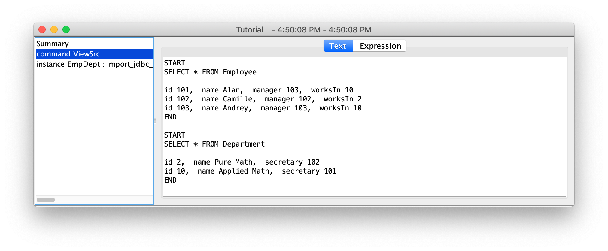
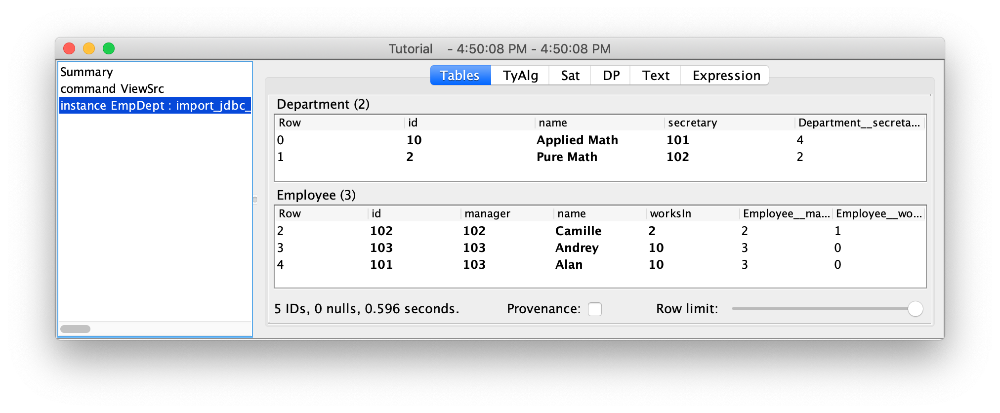
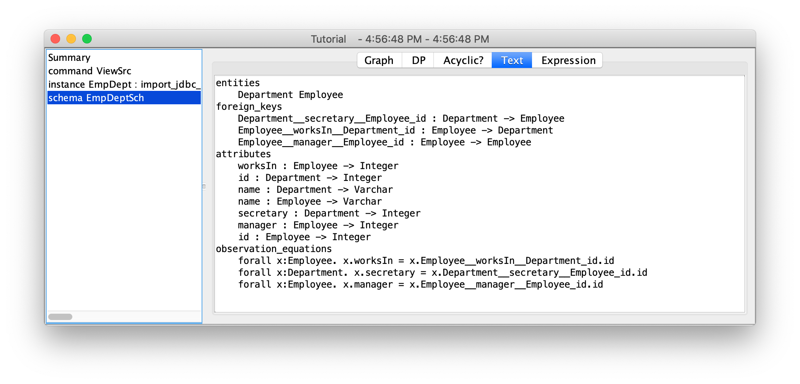
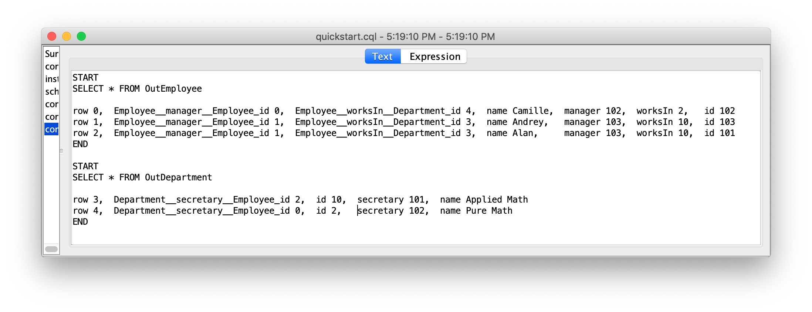

Categorical Databases
Home | Download | Getting Started | Manual | Wiki | Papers | Screen Shots | Github | Google Group | Conexus | ContactSQL Import/Export Quick Start
This example is recommended for anyone dealing with SQL data and is built-in to the IDE as QuickSQL. It imports a cloud-based MySQL database about employees and departments into CQL, demonstrates basic CQL operations, and then exports the data back into the MySQL database. Accessing any SQL database management system in CQL requires adding the vendor's JDBC driver to the java classpath when running CQL; this example requires downloading MySQL connector-j version 5.1.47 and running CQL from the terminal in a directory containing both jar files (on Windows, replace : by ;):
java -cp "cql.jar:mysql-connector-java-5.1.47.jar" catdata.ide.IDE
We start by viewing the database:
command ViewSrc = exec_jdbc "jdbc:mysql://mysql.categoricaldata.net:3306/aql_tutorial?user=xxx&password=yyy" {
"SELECT * FROM Employee"
"SELECT * FROM Department"
}

We next import that database into CQL. The only difference between the SQL and CQL tables is that in CQL we can see globally unique row numbers (that may vary from run to run) and references to these row numbers. In this case, we are using a public MySQL DB that uses back-ticks for quotes and requires a time zone parameter.
instance EmpDept = import_jdbc_all "jdbc:mysql://mysql.categoricaldata.net:3306/aql_tutorial?user=xxx&password=yyy&serverTimezone=America/New_York" {
options jdbc_quote_char = "`"
}

We can examine the imported SQL schema, although we will not discuss it further here.
schema EmpDeptSch = schemaOf EmpDept
To export our imported instance back to SQL, we choose a prefix (here, Out).
We export the data using row as the name of the column for CQL's row numbers.
Note that we export to CQL's built-in SQL Database (indicated by ""; see the other JDBC SQL example for more details.)
We clean up in case a previous run left tables around.
command Export = export_jdbc_instance EmpDept "" "Out" {
options id_column_name = "row"
}
And now we can see the exported data in SQL.
command ViewDst = exec_jdbc "" {
"SELECT * FROM OutEmployee"
"SELECT * FROM OutDepartment"
}

In its fully generality as described above, round tripping leads to redundant information. See the other JDBC SQL example for a more refined import/export process that removes these redundancies.